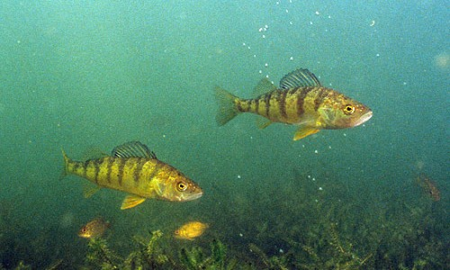

 Researchers for the North Temperate Lakes Long-Term Ecological Research program have collected fish from a number of lakes in Wisconsin since 1981. The total lengths and weights of Yellow Perch (Perca flavescens) captured from Trout Lake from 1981-2006 are recorded in YPerchTL.csv (view, download, meta). Use these data to answer the following questions. [Note that these data came from this website. See the site for more information about the sampling protocol that produced these data.]
Load these data, isolate Yellow Perch captured with only beach seines and fyke nets in 1997, and answer the following questions. [Note that this is a continuation of this exercise.]
from Derek H. Ogle , created 09-Nov-15, updated 09-Nov-15, Comments/Suggestions.